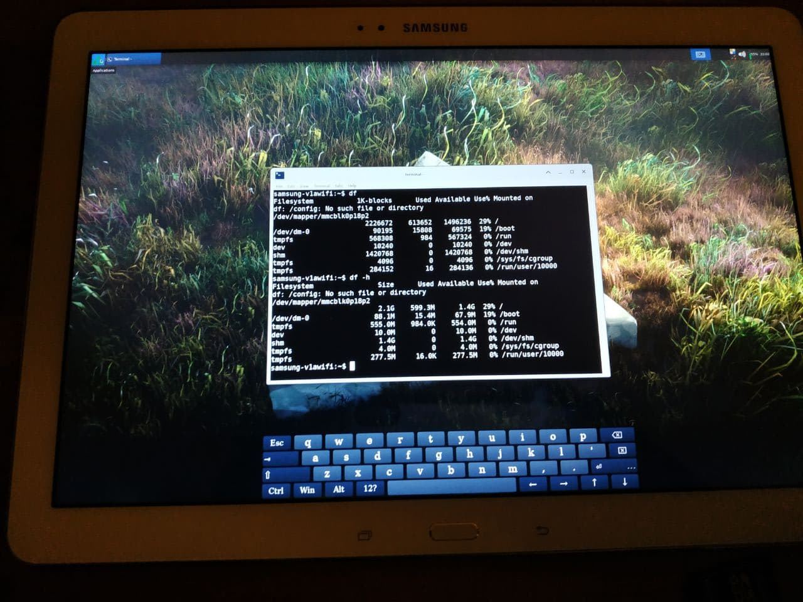

Samsung Galaxy Tab Pro 12.2 (WiFi) (samsung-v1awifi)
Jump to navigation
Jump to search
|
 v1awifi with the xfce GUI | |
| Manufacturer | Samsung |
|---|---|
| Name | Galaxy Tab Pro 12.2 (WiFi) (2014) |
| Codename | samsung-v1awifi |
| Released | 2014 |
| Category | testing |
| Original software | Android 5.1.1 |
| postmarketOS kernel | 3.4.113 (downstream) |
| Hardware | |
| Chipset | Samsung Exynos 5420 |
| CPU | 4x1.9 GHz Cortex-A15 and 4x1.3 GHz Cortex-A7 |
| GPU | Mali-T628 MP6 |
| Display | 2560x1600 |
| Storage | 32/64 GB |
| Memory | 3 GB |
| Architecture | armv7 |
{kind=link}
| USB Networking |
Partial
|
|---|---|
| Flashing |
Broken
|
| Touchscreen |
Partial
|
| Display |
Works
|
| WiFi |
Works
|
| FDE | |
| Mainline |
Broken
|
| Battery |
Works
|
| 3D Acceleration | |
| Audio | |
| Bluetooth | |
| Camera |
Broken
|
| GPS | |
| Mobile data | |
| SMS | |
| Calls | |
| USB OTG | |
| NFC | |
| Accelerometer | |
|---|---|
| Magnetometer | |
| Ambient Light | |
| Proximity | |
| Hall Effect | |
| Ir TX | |
|---|---|
| TrustZone | |
Contributors
- Grimler
- AAT596
Maintainer(s)
- AAT596
- Grimler
Requirements
The device needs to have an unlocked bootloader (OEM unlock state).
The device also needs to have TWRP installed (tested with version 3.4.0).
Users owning this device
- AAT596 (Notes: LineageOS 17.1)
How to enter flash mode
Press and hold Power + Volume Down + Home. Press Volume Up when prompted.
Mainline information
Installation
Create TWRP flashable zip:
$ pmbootstrap install --android-recovery-zip
$ pmbootstrap export
Run adb push /tmp/postmarketOS-export/pmos-samsung-v1awifi.zip to copy zip to the device, reboot to twrp and install the zip and then reboot to system.
Hardware status
Status for Mainline (M) kernel:
Based on deviceinfohw.ru:
| Status (M) | Hardware | Info (M) |
|---|---|---|
| Y | Booting | boot.img has restriction of approx 8MB, which is /boot partition size. |
| Y | USB Networking | The device is recognized by the computer if it's connected by USB. |
| N | Panel | Samsung INH_LSL122DL01 for panel is used. |
| N | Touchscreen | Atmel MXT1664S panel for touchscreen is used. |
| N | SD Card | MicroSD card recognition. |
| Y | eMMC | Samsung BWBC3R for eMMC is used. |
| N | GPS | |
| N | WiFi | Broadcom BCM4339 for WiFi is used. |
| N | Bluetooth | Broadcom BCM4339 for Bluetooth is used. |
| N | GPIO keys | |
| N | Battery and Charger | Charger sec-fuelgauge is used. |
| N | PMIC | Maxim 77802 (max77802) and Maxim 77803 (max77803) for PMIC are used. |
| N | Sound | ASoC: arizona for audio is used. |
| N | Voice processor | |
| N | Thermal sensor | |
| N | Color sensor | Capella Micro CM3323 for color sensor is used (Color Sensor with I2C Interface). |
| N | Accelerometer | Bosch Sensortec BMA255 for accelerometer is used. |
| N | Magnetometer | Asahi Kasei Microsystems AK8963C for magnetometer is used. |
| N | Gyroscope | Bosch Sensortec BMG160 for gyroscope is used. |
| N | Light sensor | |
| N | Front/rear camera | Samsung S5K6B2, Sony IMX134 and I2C S5K6B2YX 2M camera sensor are used. |
| N | GPU | ARM Mali-T628 MP6 for GPU is used. |
| Accessories | Hardware | Info (M) |
|---|---|---|
| N | NotePRO 12.2/TabPRO 12.2 Galaxy Keyboard Cover | Model EE-CP905UBEGUJ |
| N | Galaxy TabPro Pen | Model EJ-PW700CBEGUJ |
Downstream information
What does not work
- KDE Plasma (boots into black screen)
- Any DE that uses Wayland
- Stylus
- Touchscreen stops working after some minutes of uptime and after reboot
Installation
Create TWRP flashable zip:
$ pmbootstrap install --android-recovery-zip
$ pmbootstrap export
Run adb push /tmp/postmarketOS-export/pmos-samsung-v1awifi.zip to copy zip to the device, reboot to twrp and install the zip and then reboot to system.
Some detailed observations
Booting XFCE UI:
- Booting is extremely slow. It stays in the Samsung splash screen for a minute and a half and then starts booting pmOS. However, if I connect the charger when the tablet is powered off, it displays the charging icon as usual, and then starts booting pmOS immediately.
- Sometimes the screen goes black for a split second and then it returns to normal.
- Cannot boot into weston somehow. Seems that the interface does not work here. It seems common between other devices that share the same kernel (any DE that uses Wayland).
- Create a file called /etc/X11/Xwrapper.config with the line `needs_root_rights=yes` to get X working.
- The tablet freezes when the device is powered off or rebooted (from terminal and from XFCE UI).
- After a couple of minutes (if using XFCE UI), the tablet is frozen entirely.
- SSH does not work. If the command `sudo service sshd status` is executed on terminal, system tells me that SSH is currently loaded and functioning. However, it does not seem to work from USB (172.16.42.1) nor from WiFi. Nevertheless, telnet works.
- I see slightly wrong colors on images.
Booting with MATE makes some differences:
- The UI does not freeze after a couple of minutes.
- Reboot/Shutdown works (only via UI).
See also
- pmaports!2671 Initial merge request
- pmaports!3053 Initial merge request (mainline kernel)
- Exynos5420 kernel
- Device package
- Kernel package